Activity: Generating a pattern in an assembly
The objective of this activity is to show how to create a pattern of parts within an assembly.
In this activity you will use different options to assembly patterns.
A pattern will be created in a part that will later be used to position fasteners in an assembly.
Open the part cylinder_01.par in the folder that contains the activities.
In PathFinder, select the cutout shown.
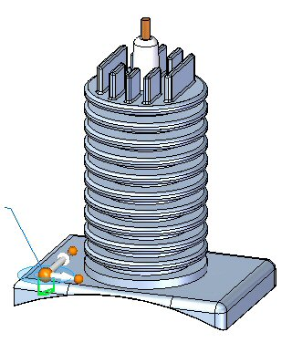
On the Home tab in the Pattern group, choose the Rectangular Pattern command .
When prompted to select a face or reference plane, select the lock icon on the face shown.
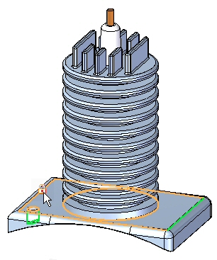
Orient the shape as shown and set the parameters to:
-
Pattern Type: Fit
-
X Count: 2
-
Y Count: 2
-
X Distance: 285.00
-
Y Distance: 170.00
You can use the Tab key to move the focus to the next field.
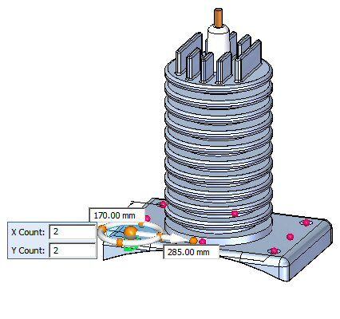
If the pattern is oriented differently after setting the parameters, use the steering wheel to change the orientation of the pattern.
Accept the pattern.
Save and close the cylinder_01.par.
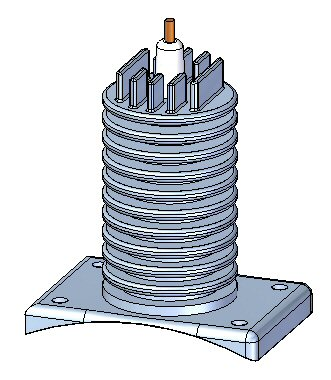
It is important that the part be saved. The pattern created is used in the upcoming steps of the activity.
The fastener will be placed using the reference feature of the pattern that resides in the part.
Open the assembly rotary_engine.asm with all the parts active.
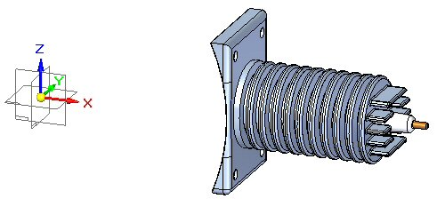
Drag the fastener 25mm_fastner.par and place the fastener in the reference feature of the part pattern as shown.
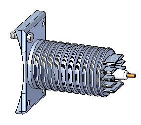
On the Home tab in the Pattern group, click the Pattern command .
When prompted to select the parts to be included in the pattern, select the fastener shown and Accept.
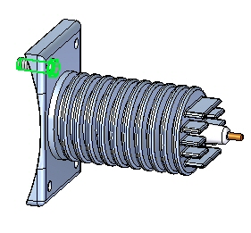
When prompted to click on the part or sketch that contains the pattern, click the part cylinder_01.par as shown.
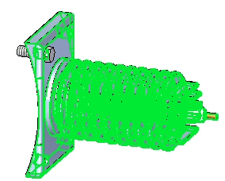
When prompted to click on the pattern, select the whole pattern as shown, and then select the hole where you placed the first bolt.
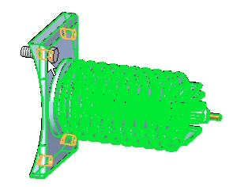
Click Finish to accept the pattern. The pattern is placed.
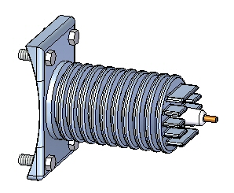
On the Home tab in the Sketch group, choose the Sketch command .
Select the front reference plane to place the sketch.
Ensure that Peer Edge Locate is enabled by clicking Tools→Edge Locate→Peers.
On the Home tab in the Features group, choose the Circular Pattern command
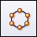
.Ensure that the full circle option
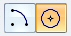
is set.Set the count to 4.
Place the center of the circle at the origin point.
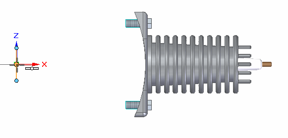
Place a 450 mm radius circle centered on the origin of the reference planes oriented as shown.
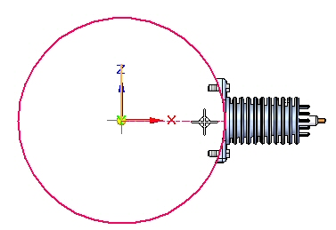
When prompted to click on the arc direction, click above the part as shown.
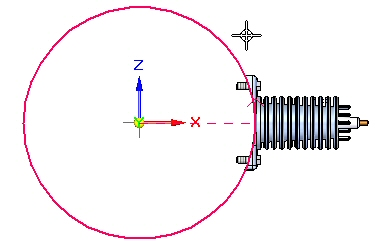
The pattern circle is created.

Click Close Sketch , and then click Finish.
On the Home tab→Pattern group, choose the Pattern command .
When prompted to select the parts in the pattern, click on the parts in PathFinder as shown and accept.
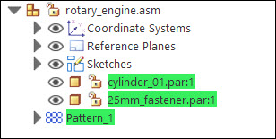
When prompted to select the part or sketch that contains the pattern, select the sketch as shown.
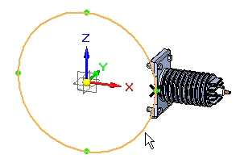
When prompted to click on the pattern, click on the circle as shown.
Click Finish to create the pattern.

Select the sketch and then click Edit Profile
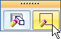
.Select the pattern circle as shown.
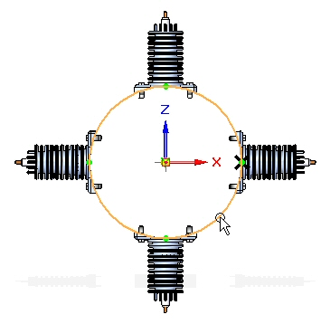
Set the count to 6. Close the sketch and then click Finish.
Select the pattern in PathFinder. Click Edit Definition, and then click Finish to recalculate the pattern.
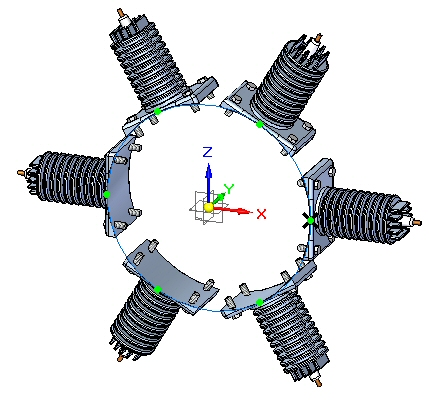
In PathFinder, right click item_3 in the pattern and then click Suppress.
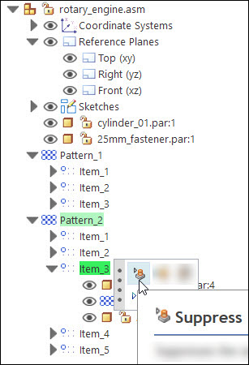
Item_3 is suppressed as shown.
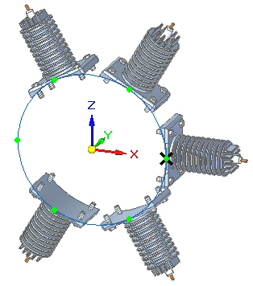
The occurrence is suppressed.
In PathFinder, right click 25mm_fastener.par in item_2 in the pattern and then click Occurrence Properties.
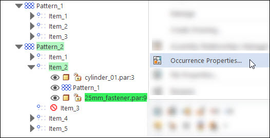
Set No in the Reports/Parts List column.
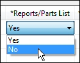
The item will be removed from assembly reports and draft parts list.
In this activity you learned some of the options available for generating assembly patterns.
-
Click the Close button in the upper-right corner of the activity window.
Answer the following questions:
-
Name two entities that control the placement of a pattern of components in an assembly.
-
How do you suppress one of the occurrences of an assembly pattern?
-
How can a component that is part of an assembly pattern be excluded from assembly and draft reports?
-
Name two entities that control the placement of a pattern of components in an assembly.
An pattern of assembly components can be controlled by either an assembly sketch, or by a pattern that exists within one of the components placed in the assembly.
-
How do you suppress one of the occurrences of an assembly pattern?
Right click on the item occurrence in pathfinder, then click suppress.
-
How can a component that is part of an assembly pattern be excluded from assembly and draft reports?
Right click on the occurrence in pathfinder and then click the occurrence properties.